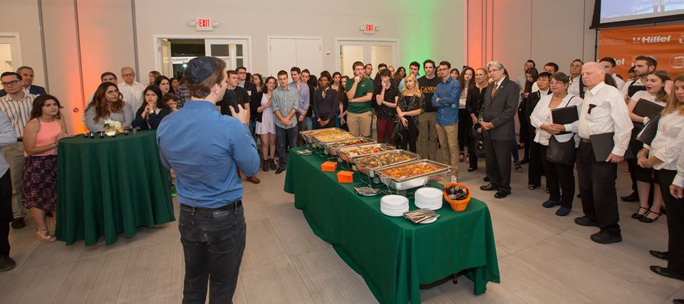

Seth Manilove: The Not-So-Typical Pre-Medical Student
Seth served two terms as the President of the University of Miami Hillel in which he volunteered countless hours to better the Jewish community at the University of Miami. He represented the University of Miami's Two-thousand Jewish students to The Greater Miami Jewish Federation, The University of Miami Hillel Board of Directors, the Student Government, and to the University's administration.
Seth has been the keynote speaker at numerous events for organizations such as The Birthright Israel Foundation, The Greater Miami Jewish Federation, and The South Dade Jewish Federation.
Seth Manilove was a Panelist at the Greater Miami Jewish Federation's Women's Philanthropy Event: How to Keep Judaism Alive - Carrying on Jewish Tradition
Seth Manilove addressing the University of Miami on Holocaust Remembrance Day.
Seth speaking at the University of Miami Hillel 75th Anniversary Celebration and community-wide fundraising event.

Seth addressing the University of Miami Student Government and the President of the University, Dr. Julio Frenk.
After anti-semitic acts took place at the University of Miami campus, Manilove along with Student Government President, Evan de Joya made a statement to the entire University community.